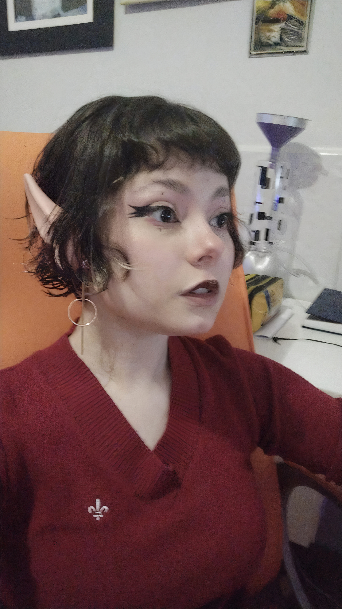

SOBRE MIM
Oioi, pessoinha! Tudo bem do lado daí? Espero que sim!!
Me chamo Thaís, prazer! Sou designer e ilustradora, e claro, afeiçoada por arte, inclusive a matemática!
Minha caminhada no campo criativo é de longa data, e é com certeza o que eu mais gosto de fazer: criar!
Meu movimento artístico favorito é o dadaísmo! E pode ser o seu também se gostar de memes nonsense!